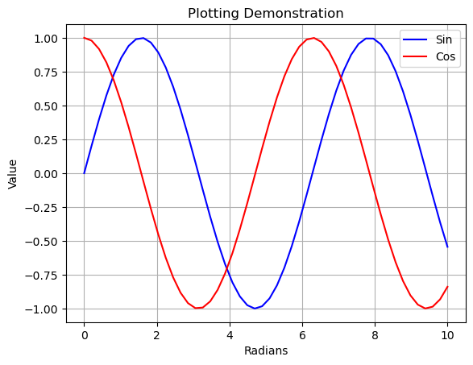
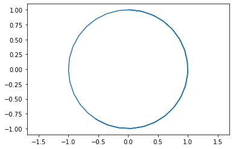
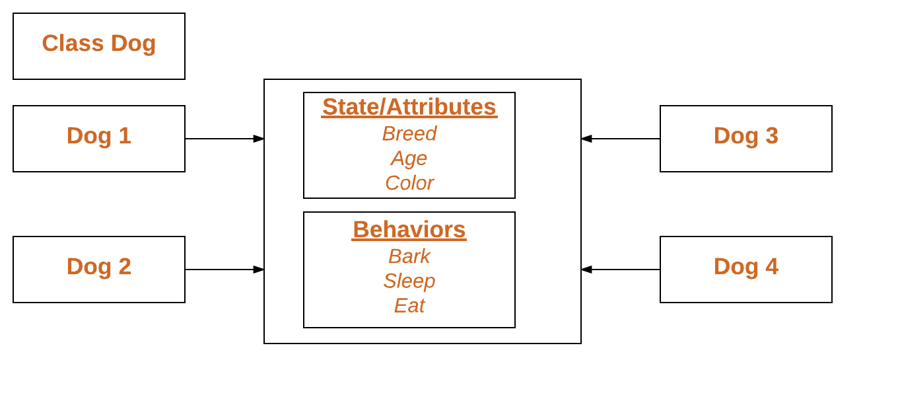

a = 12
b = 2
print(a + b)
print(a**b)
print(a/b)14
144
6.0The purpose of this Jupyter Notebook is to get you started using Python and Jupyter Notebooks for routine engineering calculations. This introduction assumes this is your first exposure to Python or Jupyter notebooks.
This notebook composes information available here and here
The easiest way to use Jupyter notebooks is to use a cloud-based service such as Google Colaboratory. You will need continuous internet connectivity to access your work, but the advantages are there is no software to install or maintain.
For regular off-line use you should consider installing a Jupyter Notebook/Python environment directly on your laptop. This will provide you with reliable off-line access to a computational environment. This will also allow you to install additional code libraries to meet particular needs.
Choosing this option will require an initial software installation and routine updates. For this course the recommended package is Anaconda available from Continuum Analytics. Downloading and installing the software is well documented and easy to follow. Allow about 10-30 minutes for the installation depending on your connection speed.
After installing be sure to check for updates before proceeding further. With the Anaconda package this is done by executing the following two commands in a terminal window:
> conda update conda
> conda update anacondaAnaconda includes an ‘Anaconda Navigator’ application that simplifies startup of the notebook environment and manage the update process.
Instrutions for the Anaconda Navigator are slightly different and are not covered in this notebook. We assume you use a terminal from hereon.
If you decide to use Anaconda, the first thing to do is to create a virtual environment for the course. This makes sure that you do not pollute your main OS python envinronment.
You can do this with:
conda create --name feedback-control python=3.10
You only need to run the previous command once.
You then just need to activate your environment:
conda activate feedback-control
create a folder you want to use for this course. You can use your OS GUI or run:
mkdir feedback-control
This creates the folder feedback-control in your current directory. Make sure you are in the correct folder before executing the previous commands.
To run the notebooks you need to install the following packages: fastcore pandas matplotlib control sympy numpy ffmpeg-python
you can do this running:
python -m pip install fastcore pandas matplotlib control sympy numpy ffmpeg-python notebook
You are ready to go!
Run:
jupyter notebook
to start your notebook session.
If you are using a cloud-based service a Jupyter session will be started when you log on.
If you have installed a Jupyter/Python distribution on your laptop then you can open a Jupyter session in one of two different ways:
Use the Anaconda Navigator App, or
Open a terminal window on your laptop and execute the following statement at the command line:
> jupyter notebookEither way, once you have opened a session you should see a browser window.
At this point the browser displays a list of directories and files. You can navigate amoung the directories in the usual way by clicking on directory names or on the ‘breadcrumbs’ located just about the listing.
Jupyter notebooks are simply files in a directory with a .ipynb suffix.
Python is an elegant and modern language for programming and problem solving that has found increasing use by engineers and scientists. In the next few cells we’ll demonstrate some basic Python functionality.
The Python language has only very basic operations. Most math functions are in various math libraries. The numpy library is convenient library. This next cell shows how to import numpy with the prefix np, then use it to call a common mathematical function
Lists are a versatile way of organizing your data in Python.
You can join one list to another or concatentate them
Element by element operation
A for loop is a means for iterating over the elements of a list. The colon marks the start of code that will be executed for each element of a list. Indenting has meaning in Python. In this case, everything in the indented block will be executed on each iteration of the for loop. This example also demonstrates string formatting.
Note that while you can do calculations on the lists, NumPy has a special object to represent math vectors or matrices called array.
This is NumPy’s main object and it is a homogeneous multidimensional array. It is a table of elements (usually numbers), all of the same type, indexed by a tuple of non-negative integers. In NumPy dimensions are called axes.
NumPy arrays are much more powerful.
Creating an array:
array transforms sequences of sequences into two-dimensional arrays, sequences of sequences of sequences into three-dimensional arrays, and so on.
The type of the array can also be explicitly specified at creation time:
Often, the elements of an array are originally unknown, but its size is known. Hence, NumPy offers several functions to create arrays with initial placeholder content. These minimize the necessity of growing arrays, an expensive operation.
array([[[1, 1, 1, 1],
[1, 1, 1, 1],
[1, 1, 1, 1]],
[[1, 1, 1, 1],
[1, 1, 1, 1],
[1, 1, 1, 1]]], dtype=int16)Arithmetic operators on arrays apply elementwise. A new array is created and filled with the result.
Important Unlike in many matrix languages, the product operator * operates elementwise in NumPy arrays. The matrix product can be performed using the @ operator (in python >=3.5) or the dot function or method:
Dictionaries are useful for storing and retrieving data as key-value pairs.
{'CH4': 16.04, 'H2O': 18.02, 'O2': 32.0, 'CO2': 44.01}We can retrieve a value from a dictionary:
A for loop is a useful means of interating over all key-value pairs of a dictionary.
Value CH4 is 16.04
Value H2O is 18.02
Value O2 is 32.0
Value CO2 is 44.01Dictionaries can be sorted by key or by value
CH4 16.04
CO2 44.01
H2O 18.02
O2 32.0Importing the matplotlib.pyplot library gives IPython notebooks plotting functionality very similar to Matlab’s. Here are some examples using functions from the
import matplotlib.pyplot as plt
import numpy as np
x = np.linspace(0,10)
y = np.sin(x)
z = np.cos(x)
plt.plot(x,y,'b',x,z,'r')
plt.xlabel('Radians');
plt.ylabel('Value');
plt.title('Plotting Demonstration')
plt.legend(['Sin','Cos'])
plt.grid()
(-1.09972447591003,
1.0979832896606587,
-1.0992804688576738,
1.0999657366122702)
Python offers a full range of programming language features, and there is a seemingly endless range of packages for scientific and engineering computations. Here are some suggestions on places you can go for more information on programming for engineering applications in Python.
This excellent introduction to python is aimed at undergraduates in science with no programming experience. It is free and available at the following link.
The following text is available on Amazon. Resources for this book are available on github.
pycse is a package of python functions, examples, and document prepared by John Kitchin at Carnegie Mellon University.
And there is plenty more! Google it!
This second part of the notebook is to describe some more Python concepts that will be used during the class.
#A variable stores a piece of data and gives it a name
answer = 42
#answer contained an integer because we gave it an integer!
is_it_thursday = True
is_it_wednesday = False
#these both are 'booleans' or true/false values
pi_approx = 3.1415
#This will be a floating point number, or a number containing digits after the decimal point
my_name = "Andrea"
#This is a string datatype, the name coming from a string of characters
#Data doesn't have to be a singular unit
#p.s., we can print all of these with a print command. For Example:
print(answer)
print(pi_approx)42
3.1415#What if we want to store many integers? We need a list!
prices = [10, 20, 30, 40, 50]
#This is a way to define a list in place. We can also make an empty list and add to it.
colors = []
colors.append("Green")
colors.append("Blue")
colors.append("Red")
print(colors)
#We can also add unlike data to a list
prices.append("Sixty")
#As an exercise, look up lists in python and find out how to add in the middle of a list!
print(prices)
#We can access a specific element of a list too:
print(colors[0])
print(colors[2])
#Notice here how the first element of the list is index 0, not 1!
#Languages like MATLAB are 1 indexed, be careful!
#In addition to lists, there are tuples
#Tuples behave very similarly to lists except that you can't change them
# after you make them
#An empty Tuple isn't very useful:
empty_tuple = ()
#Nor is a tuple with just one value:
one_tuple = ("first",)
#But tuples with many values are useful:
rosa_parks_info = ("Rosa", "Parks", 1913, "February", 4)
#You can access tuples just like lists
print(rosa_parks_info[0] + " " + rosa_parks_info[1])
# You cannot modify existing tuples, but you can make new tuples that extend
# the information.
# I expect Tuples to come up less than lists. So we'll just leave it at that.['Green', 'Blue', 'Red']
[10, 20, 30, 40, 50, 'Sixty']
Green
Red
Rosa Parksfloat1 = 5.75
float2 = 2.25
#Addition, subtraction, multiplication, division are as you expect
print(float1 + float2)
print(float1 - float2)
print(float1 * float2)
print(float1 / float2)
#Here's an interesting one that showed up in the first homework in 2017. Modulus:
print(5 % 2)8.0
3.5
12.9375
2.5555555555555554
1#Just about every standard math function on a calculator has a python equivalent pre made.
#however, they are from the 'math' package in python. Let's add that package!
import math
print(math.log(float1))
print(math.exp(float2))
print(math.pow(2,5))
# There is a quicker way to write exponents if you want:
print(2.0**5.0)
#Like in MATLAB, you can expand the math to entire lists
list3 = [1, 2, 3, 4, 5]
print(2 * list3)1.749199854809259
9.487735836358526
32.0
32.0
[1, 2, 3, 4, 5, 1, 2, 3, 4, 5]#Repeat code until a conditional statement ends the loop
#Let's try printing a list
fib = [1, 1, 2, 3, 5, 8]
#While loops are the basic type
i = 0
while(i < len(fib)):
print(fib[i])
i = i + 1
#In matlab, to do the same thing you would have the conditional as: counter < (length(fib) + 1)
#This is because matlab starts indexing at 1, and python starts at 0.
#The above type of loop is so common that the 'for' loop is the way to write it faster.
print("Let's try that again")
#This is most similar to for loops in matlab
for i in range(0, len(fib)) :
print(fib[i])
print("One more time:")
#Or you can do so even neater
for e in fib:
print(e)1
1
2
3
5
8
Let's try that again
1
1
2
3
5
8
One more time:
1
1
2
3
5
8A function is a block of code which only runs when it is called.
You can pass data, known as parameters, into a function.
A function can return data as a result.
To call a function, use the function name followed by parenthesis:
Information can be passed into functions as arguments.
Arguments are specified after the function name, inside the parentheses. You can add as many arguments as you want, just separate them with a comma.
The following example has a function with one argument (fname). When the function is called, we pass along a first name, which is used inside the function to print the full name:
def my_function(fname):
print(fname + " Refsnes")
my_function("Emil")
my_function("Tobias")
my_function("Linus")Emil Refsnes
Tobias Refsnes
Linus RefsnesYou can send any data types of argument to a function (string, number, list, dictionary etc.), and it will be treated as the same data type inside the function.
E.g. if you send a List as an argument, it will still be a List when it reaches the function:
To let a function return a value, use the return statement:
A class is a user-defined blueprint or prototype from which objects are created. Classes provide a means of bundling data and functionality together. Creating a new class creates a new type of object, allowing new instances of that type to be made. Each class instance can have attributes attached to it for maintaining its state. Class instances can also have methods (defined by their class) for modifying their state.
To understand the need for creating a class let’s consider an example, let’s say you wanted to track the number of dogs that may have different attributes like breed, age. If a list is used, the first element could be the dog’s breed while the second element could represent its age. Let’s suppose there are 100 different dogs, then how would you know which element is supposed to be which? What if you wanted to add other properties to these dogs? This lacks organization and it’s why we need classes.
Class creates a user-defined data structure, which holds its own data members and member functions, which can be accessed and used by creating an instance of that class. A class is like a blueprint for an object.
It’s not hard to define Python class. To do so, you’ll need the class keyword:
class ClassName: # Statement-1 . . . # Statement-N
For example
If you run the above code in a Python environment, you’ll find you can call Example.variable to return an integer value.
This is an example of a class for data-only objects, but it’s equally easy to define a class that returns a function object by adding the def keyword to your code:
<function __main__.Example.b(self)>We need a few more concepts:
An Object is an instance of a Class. A class is like a blueprint while an instance is a copy of the class with actual values. It’s not an idea anymore, it’s an actual dog, like a dog of breed pug who’s seven years old. You can have many dogs to create many different instances, but without the class as a guide, you would be lost, not knowing what information is required. An object consists of :
When an object of a class is created, the class is said to be instantiated. All the instances share the attributes and the behavior of the class. But the values of those attributes, i.e. the state are unique for each object. A single class may have any number of instances.
Example:
class Dog:
# A simple class
# attribute
attr1 = "mammal"
attr2 = "dog"
# A sample method
def fun(self):
print("I'm a", self.attr1)
print("I'm a", self.attr2)
# Object instantiation
Rodger = Dog()
# Accessing class attributes
# and method through objects
print(Rodger.attr1)
Rodger.fun()mammal
I'm a mammal
I'm a dogClass methods must have an extra first parameter in the method definition. We do not give a value for this parameter when we call the method, Python provides it.
If we have a method that takes no arguments, then we still have to have one argument.
When we call a method of this object as myobject.method(arg1, arg2), this is automatically converted by Python into MyClass.method(myobject, arg1, arg2).
Note that this means that inside the function method (in our example) we now have access to the instance of the class! so we can access its variables, etc.
The init method is similar to constructors in C++, it constructs the object and can be used to initialise the object’s state.
Like methods, a constructor also contains a collection of statements (i.e. instructions) that are executed when the object is created.
The __init__ method runs as soon as an object of a class is instantiated. The method is useful to do any initialization you want to do with your object.
# A Sample class with init method
class Person:
# init method or constructor
def __init__(self, name):
self.name = name
# Sample Method
def say_hi(self):
print('Hello, my name is', self.name)
p = Person('Nikhil') # as soon as we do this, the __init__ method is called.
p.say_hi()Hello, my name is NikhilInstance variables are used to store data that is unique to each instance of the class. Instance variables are variables whose value is assigned inside the __init__ method or inside a class method (a method with the argument self)
Class variables are for attributes and methods shared by all instances of the class. Class variables are variables whose value is assigned directly in the class.
# Class for Dog
class Dog:
# Class Variable
animal = 'dog'
# The init method or constructor
def __init__(self, breed, color):
# Instance Variable
self.breed = breed
self.color = color
# Objects of Dog class
Rodger = Dog("Pug", "brown")
Buzo = Dog("Bulldog", "black")
print('Rodger details:')
print('Rodger is a', Rodger.animal)
print('Breed: ', Rodger.breed)
print('Color: ', Rodger.color)
print('\nBuzo details:')
print('Buzo is a', Buzo.animal)
print('Breed: ', Buzo.breed)
print('Color: ', Buzo.color)
# Class variables can be accessed using class
# name also
print("\nAccessing class variable using class name")
print(Dog.animal)Rodger details:
Rodger is a dog
Breed: Pug
Color: brown
Buzo details:
Buzo is a dog
Breed: Bulldog
Color: black
Accessing class variable using class name
dogGoogle Colab - An Introduction to Google Colab, McGraw Center for Teaching and Learning - Getting Started with Google Colab - Colab Walkthrough, Stanford University - Google Colab Tutorial for Data Scientists, Datacamp.com